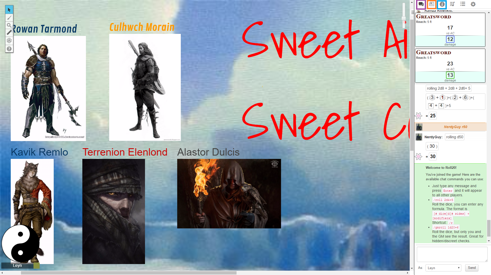
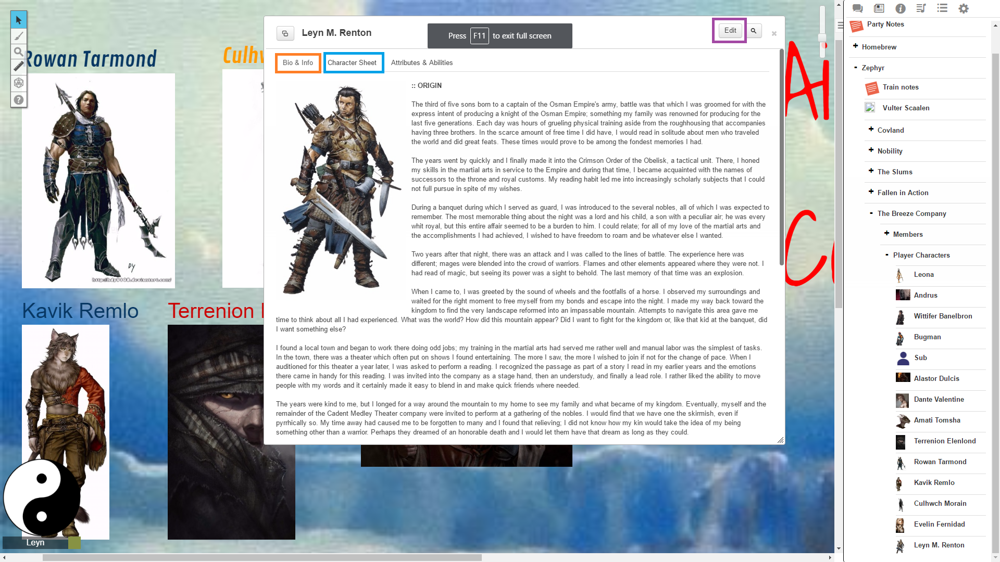
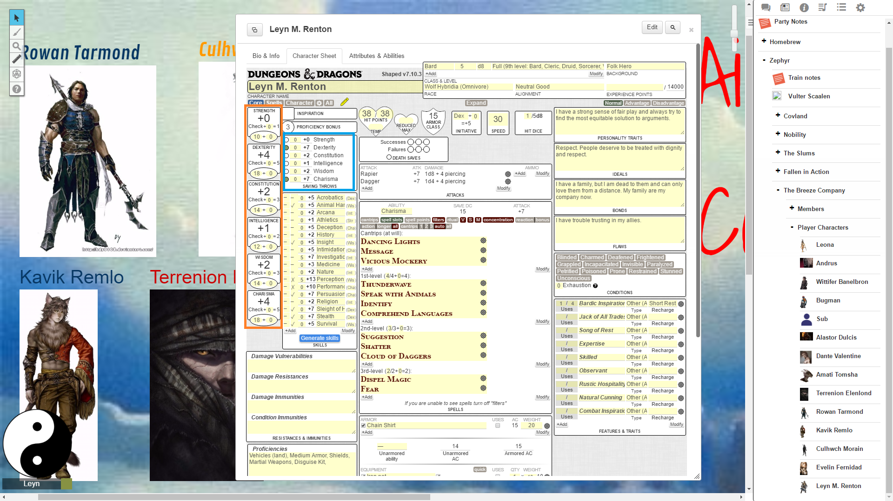

Congratulations! You've been deemed worth of joining a campaign from one of these PBR people that likely follows D&D 5e rather closely. You get a free primer on what's happening with this whole Roll20 thing.
Character choices here are relatively straightforward, but require some level of thinking. You have six stats you'll need to consider and 32 points to spend between them. Aside from those basic considerations, you'll also want to make sure at some point to write a character background that explains, at the minimum:
What you include, or don't, in your background has an impact on the game. Your DM/GM will review and approve things after you are done writing. The idea is to make sure your character is sufficiently justified for whatever things they do. Personally, I prefer to think of my character as a whole and build around things like their class, their occupation, and background.
This will be the system you are going to use to handle your character sheet and notes. Your character will start with 9 points in each stat. You then have an additional 32 points to distribute among those stats. Use the Player's Handbook (PHB) and whatever other materials you have to determine where best to spend those points.
Your background will go into your character sheet. Let's have a quick review of how that works.
When you come into the game, you'll see this:
The purple item is the chat log, the orange is the journal section where you'll find information the DM leaves you about the game, the area in blue is for information on spells and such. You will spend most of your time in the chat log and character sheet areas. In addition, there is a large area for showing things like maps or other things the DM wants you to see. Battles and everything else happen in this area.
Clicking on this journal tab (that's the orange thing) would show you this panel on the right. Things like special notes or characters you've encountered or other players you meet will be in this area. Clicking on your name will open a popup window. You should be able to read the words here, but your background goes in the Bio section. Your character stat info and other special abilities go in the character sheet area. To edit the Bio, click edit at the top right.
Now let's take a look at the character sheet:
Lots of info goes here. Those 32 points you need to distribute go in the orange section. For reminder: those points are added to the pre-existing 9 points in each of those stats. The blue section I've highlighted here is for Saving throw proficiencies. Every class has two. Make sure to check off the two that apply to your character class. All of the other numbers on this page are auto-calculated, so don't bother too much there.
Of the class choices you have, three are custom classes which means that a lot of information may have to be typed in. If you pick sorceror, there is a button that lets you say "hey, I'm a sorceror" and it will fill things out for you.
If you need help, ask. If you have questions, ask. You will need to make a choice about a few things that affect the game. This choice are only somewhat important and determine how I bring you into the world (the rest will be up to you): are you working for the "good" faction, the "bad" faction, or do you want to go through the effort of making those choices on your own in-game?
If I have asked a question of any kind, please respond in writing. This should be fun all around. If you don't have it yet, please make sure you get an account on Discord (it's free) as the dialog will likely be happening there when characters are talking to each other.